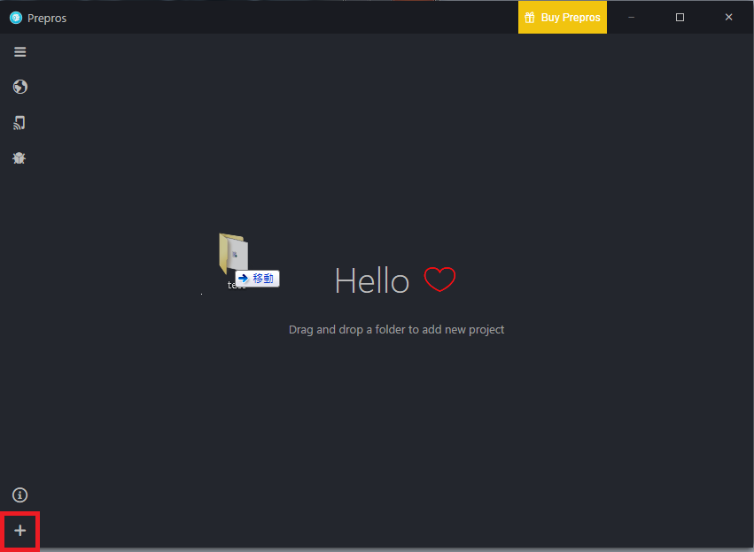
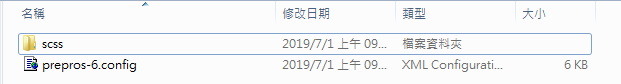
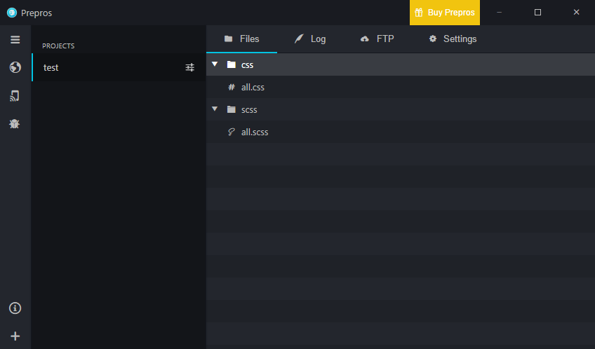
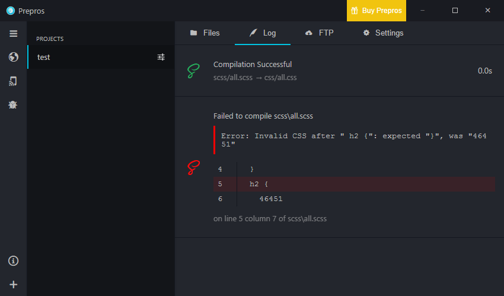
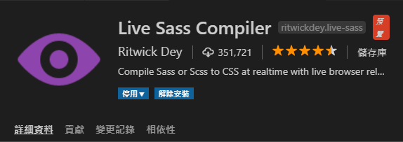
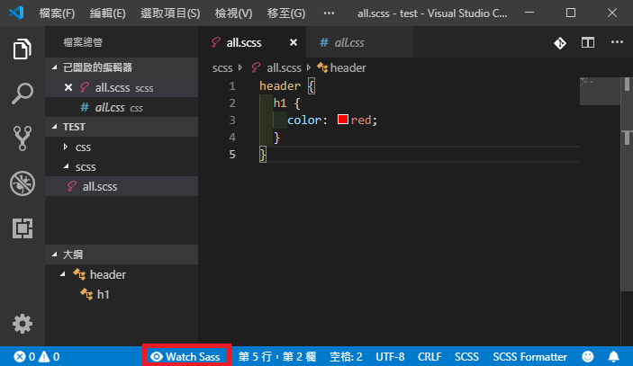
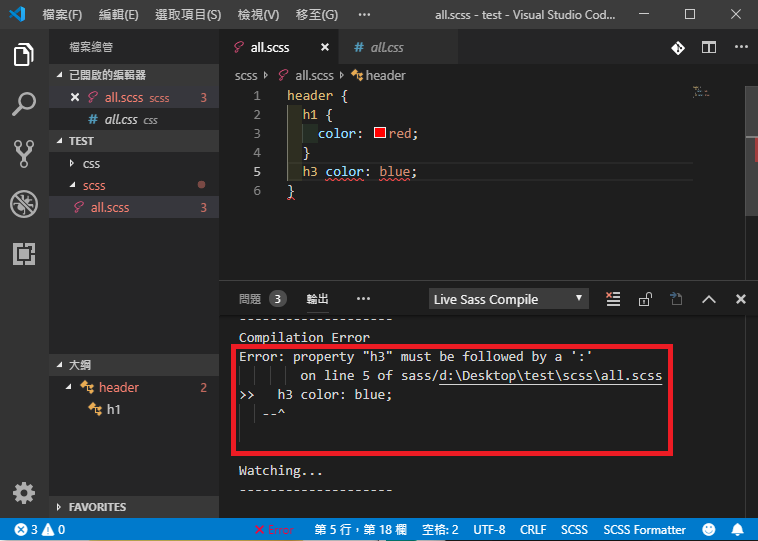

前言
Sass 是一種指令碼解析成 CSS 的手稿語言，即 SassScript。Sass 檔案本身本身不被瀏覽器所讀取，需要透過 Sass 直譯器將 SassScript 轉成 CSS 語法的 CSS 檔案。同時，SassScript 直譯器會同時對 Sass 檔案進行監視，即時更新 CSS 檔案。
Sass 有什麼好處 ?
- 將 CSS 模組化，拆分成多支檔案，方便管理與維護
- 重複的前綴詞可以透過巢狀的寫法而不需要重複撰寫
- 導入變數、函式等程式語言的概念，相同的 CSS 可以集中管理
- 常用到的 CSS 技巧可以利用模組化的方式儲存成一個 “工具包”，每次要用到時再透過 Sass 語法呼叫即可，不需要每次再從過去的資料找解法
- 許多 CSS framework 也是透過 Sass 完成，學會 Sass 可以更靈活運用在專案上
Sass 與 Scss
Sass 有兩種寫法，分別透過 .sass 和 .scss 兩種副檔名作為區分
其中 Scss 是 Sass 3 引入的新語法，其語法完全兼容 CSS 語法，也就是原來的 CSS 可以直接寫進 Scss 檔案，在寫法上也與 CSS 較為接近，容易快速上手
一般 CSS 寫法
1 | .menu {...} |
SASS 寫法
完全省略 { } 與 ; ，利用縮排(兩個空白或一個 Tab)來段行，格式非常簡潔，但縮排也容易看錯
1 | .menu |
SCSS 寫法
保留 SASS 運用巢狀的方式省略重複的前綴，也保留原 CSS 的 { } 與 ;，從 CSS 轉換過來較為直觀，且兼容 CSS，因此也較受歡迎
1 | .menu { |
巢狀結構
從以上兩種寫法可以發現到 .menu 內層的 ul 和 li 都已經省略前面的 .menu，不僅可以避免重複撰寫相同的前綴，如果要更改 .menu 的名稱，就只需要改一個地方，也清楚的表示彼此的關係
& 連接符號
使用 & 連接符號會自動連接上層元素，不需要重複撰寫
1 | // in scss |
1 | a {...} |
Sass 編譯方式
Sass 檔案無法被瀏覽器解讀，需要編譯成 CSS 檔案，而編譯方式一共有三種，在此先介紹兩種
軟體編譯 : prepros
從網站下載完後，開啟 prepros，將整個跟目錄資料夾拖曳到 prepros 內，也可以藉由左下角的
+將檔案拉到 prepros 內
拖曳到 prepros 後會自動產生一個名為
prepros-6.config設定檔，就可以開始新增scss資料夾，並在裡面建立.scss檔案
所有在裡面的檔案都會出現在 prepros 的
Files欄位在檔案內撰寫存檔後，prepros 就會自動在根目錄幫你建立相對的
css資料夾，同時在裡面也建立相對的.css檔案
所有編輯的紀錄都會出現在 prepros 的
log欄位，如果編輯失敗也會列出錯誤的位置
編輯器內建插件 : VS Code 內建的 Live Sass Compiler
如果是
VS Code的使用者，可以下載名為Live Sass Compiler的插件
下載後，開啟檔案下方會出現
Watch Sass按鈕，按下後就會開始監聽sass檔案，並建立相對的css檔案，且及時更新
如果 Sass 檔案編譯出現錯誤，會在下方的 輸出 欄位顯示
Error，並列出錯誤的位置
如果想要改變 css 檔案的路徑，可以在設定中
setting.json，新增以下程式碼1
2
3
4
5
6
7
8
9
10
11
12
13
14"liveSassCompile.settings.formats":[
// 預設為在 css 資料夾中產生相對的 .css 檔案
{
"format": "expanded",
"extensionName": ".css",
"savePath": "/css"
},
// 生成壓縮檔
{
"format": "compressed",
"extensionName": ".min.css",
"savePath": "/css"
},
]